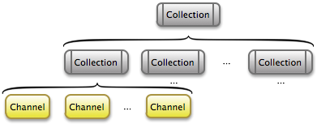
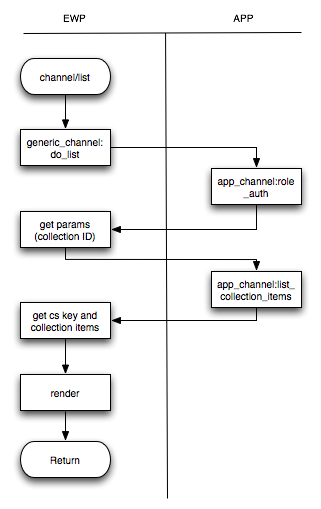
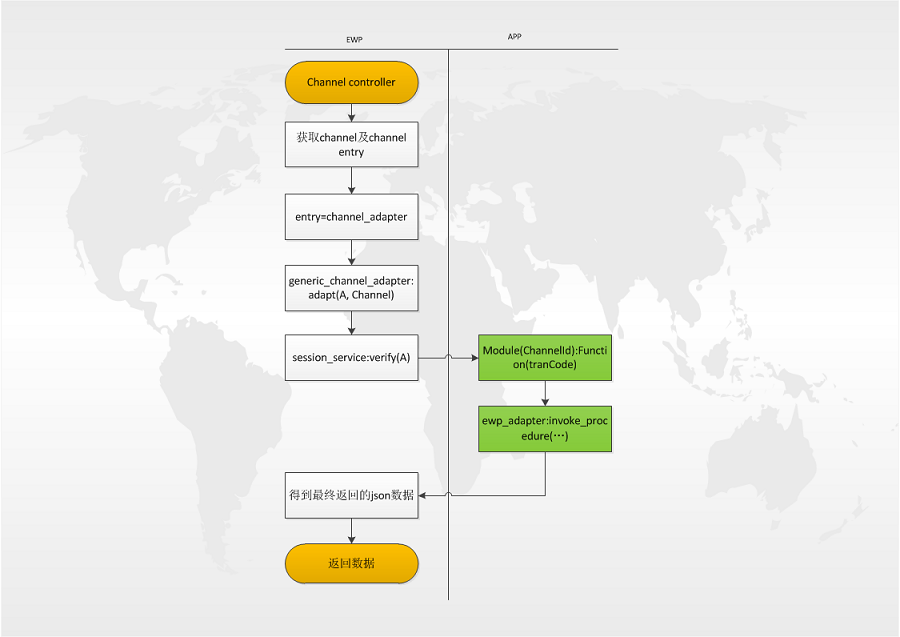

Channel的字段信息包括：[id,app,name,entry,views,props,state],描述如下：
id
类型: string 描述: 此频道的ID，项目唯一，一般约定以
appname+_做为前缀，如"helloapp_balance_query"。
name
类型: string 描述: 此频道的名称。
entry
类型: atom或者{Mod,Fun} 描述: 指定channel流程。 如果配置为{Mod,Fun}则ewp在处理channel请求时会调用配置的模块和函数。
views
类型: proplist 描述: 定义channel所包含的模板文件及在程序中的名称。
props
类型: proplist 描述: 定义channel所需要使用的业务相关参数。
state
类型: atom 描述: 定义channel是否可用。
collection的字段信息包括：[id,app,name,url,user_id,type,state,items],描述如下：
id
类型: string 描述: 此菜单的ID，项目唯一，一般约定以
appname+_做为前缀，如"helloapp_account_query"。
name
类型: string 描述: 此菜单的名称。
url
类型: string 描述: 定义collection请求地址，一般不用配置。
user_id
类型: string 描述: 定义collection特定用户，一般不配置。
type
类型: atom 描述: 定义collection的类型。
state
类型: atom 描述: 定义collection是否可用。
items
类型: proplist 描述: 定义collection的子节点信息，包含字段为
item_type,item_id,menu_order,分别为子节点类型，子节点ID，子节点位置。
如下图所示：

在手机银行项目中，入口菜单页面对应的其实是一个Collection集合，它的内容是其所包含的所有Collection节点信息;而每一个Collection节点信息进入后通常是一个二级菜单，它的内容通常是其所包含的Channel节点信息。
Channel及Collection的功能接口都在Module channel_controller中，包括常用的list/1和run/1，分别处理获取Collection内容的请求，和获取具体Channel内容的请求。
因为Channel模块为项目中的主要业务功能模块，我们将其通用的流程框架提炼出来作为一个behavior (Module generic_channel)，各项目可以通过定义相应的plugin来填充整个业务流程，关于behavior和plugin的描述请学习erlang中相关知识。
list/1的流程图如下：

channel/run的流程图如下：

以客户端请求某个具体的channel业务为例，我们描述其在EWP产品中的处理流程。例如请求URL为http://EWP_HOST/channel/run?id=X&o=X&tranCode=X的时候，则处理流程如下：
Yaws调用ewp_controller:out/1，进入ewp的hook入口。
通过ewp_uri_router:route/1，查询映射规则，映射channel/run到channel_controller:run/1，调用相关函数。
进入 channel_controller:run/1流程。首先从传入的参数中获得id，根据id从ets中查找出channel的配置,查找Entry(o(Channel, entry))配置。此时根据配置可以得到五种不同的结果：[channel_adapter,channel_proxy,new_callback,{Mod, Fun},其他],
由于项目中使用最多为channel_adapter配置，所以我们下面的流程只针对channel_adapter配置讲解。如果是channel_adapter则调用generic_channel_adapter:adapt(A, Channel)来处理。
在generic_channel_adapter:adapt/2中，首先session_service:verify(A)判断会话是否超时，然后获得ChannelId和参数tranCode分别做为Module和Function名称，调用此Module:Function得到json数据返回给客户端。